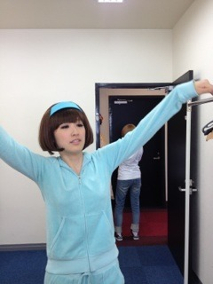

| 2012/07 24 Tue | 185回目*marika |
いつも読んでくださってる方、
初めて読んでくださった方
コメントしてくださった方、
ありがとうございます！
あのね、実は質問回答が
追いつかなくて

今日から前の記事の質問から
答えていきます！
追いつかなくて答えられなかった方、
ごめんなさい><
なるべく次の記事で答えるように
これからしていきます。
なので、これからのBloGは
毎回質問回答があるかも

自分がちゃんと計画立ててれば
全部答えれたはずなのにx(
このタイミングにごめんなさい。
よろしくお願いします。
**********
 乃木坂って、てかアイドルって
乃木坂って、てかアイドルって
あんま眼鏡キャラいない気がする
のだけど事情あるのかな？
是非まりっかに乃木坂１の
眼鏡アイドルなってほしいな。
 メガネキャラか...
メガネキャラか...
そういやメンバーで
メガネの子いっぱいおるよ笑
え、まりっかがですか！
なりません！(きっぱり)
来週やばそう(>_<)
てか、鼻にティッシュ
詰めてなかった？
あれはなんだ？？
タマネギ...涙出ないように...
あのブランケットは、、、
実際使えたんですかい？(￣￣*)←
あのアルミはどこで
入手したの！？笑
アルミじゃないもん！
ブランケットだもん！←
ん？だってバスの中で広げちゃったし
使ってないよ
 ぇ
ぇ
ぇ
ずっと前から持ってたの。
ｱｽﾚﾁｯｸ一番タイム早かったけど
まりか得意なのかな？∀
なんだかんだ運動すきよ
意外とやるだろ((どや
まりっかは目が良いの？
だから伊達眼鏡なのか～！
実は私右目だけ悪くてね、
一応持ってるんやけど、
すぐ気持ち悪くなるから
授業中でしかかけないのよ

この前買ったのはおしゃれ用♪
そういえば幕張全握の時に
あげたプレゼントは
もう手元に届いたかな？
届いています！
ありがとうございます

すごく嬉しいです。
まりかも間の取り方とか
以前よりも上手になった気がする
のは、レッスンとかあったのかな？
でもまだまだ。
番組見て反省することが
いっぱいあります。
Lessonは主にダンスやボイトレ♪
伊達メガネなんやたっね、
代官山に伊達メガネ専門店あるの
知ってる？
へーそんなのあるんや‼
知らんかったよ

まりかはろってぃと
なかいいよね(*´∀｀*)
コンビ名かんがえちゃえば？(笑)
うはは笑
コンビ名増えちゃうねー
どーしよ！
みんな仲良いからどーしよ！笑
まりかって呼ばれるのか、
まりちゃんって呼ばれるの
どっちがいいですか？(笑)
また、もしまりかって呼ばれる方が
良かったならば俺もまりかって
呼んでいいですか？
どっちでも良いですよ

まりちゃんでも嬉しいし、
まりかでも嬉しいし...
好きな方で呼んでください^^
かわいさの秘訣はなんですか？
秘訣なんてそんな...
ないですよ！
ただ本当嬉しいです。
照れるやん
 メガネは何色がすき?
私のメガネはべっ甲です
メガネは何色がすき?
私のメガネはべっ甲です

伊達メガネは黒だよ。
シンプルなのがいちばんよ。
**********
今日は自主練の日でした。
16時くらいから21時までおった‼
最後にかずみと私の
2人が残ったよ

いっぱい歌って踊った。
むふ

＼アメイジング／
 かずみに許可とってます
かずみに許可とってます
水色好きすぎるでしょう

水色ちゃんとピンクちゃん
では明日もLesson頑張りまりか

まりか
コメント(118)
2012/07/24 23:42